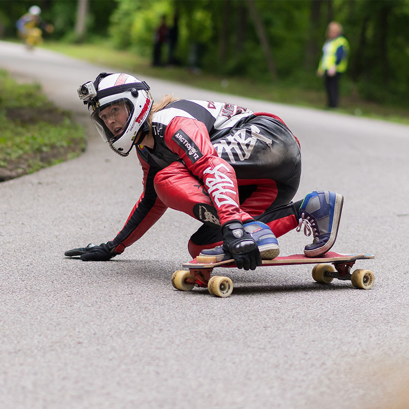

<div id="content">
  <div id="main">
    <div class="container">
      <div class="one_third">
						
      </div>

      <div class="two_third last">
						<h1>Zach Bailey</h1>
						<p><strong style="font-family: Helvetica;">MEET ZACH...&nbsp;</strong><span>Born and raised, Vail Colorado, Zach currently nests high in the Rocky Mountains where he finds thrill and reward in the adventure. From a small tike he     was on the hills, skiing bumps, chasing sticks, to his current hype; completely off resort split-boarding animal, Zach fits perfectly to the Never     Summer Persona. He found his passion longboarding in 2012 where he raced the last year of Buffalo Bill Downhill. Now he tallies over hundreds of miles     in downhill descents of Colorado's finest roads, and competes continentally.</span>
						</p>
						<p><strong style="font-family: Helvetica;">ZACH'S FAVORITE NS BOARD IS...&nbsp;</strong><span>The&nbsp;Reaper or Superfreak Snowboard; Prospector split, or the ripsaw if i have to be on resort.&nbsp; Media: Instagram: Dinsmore_Bailey</span>
						</p>
					</div>


    </div>
  </div>
</div>